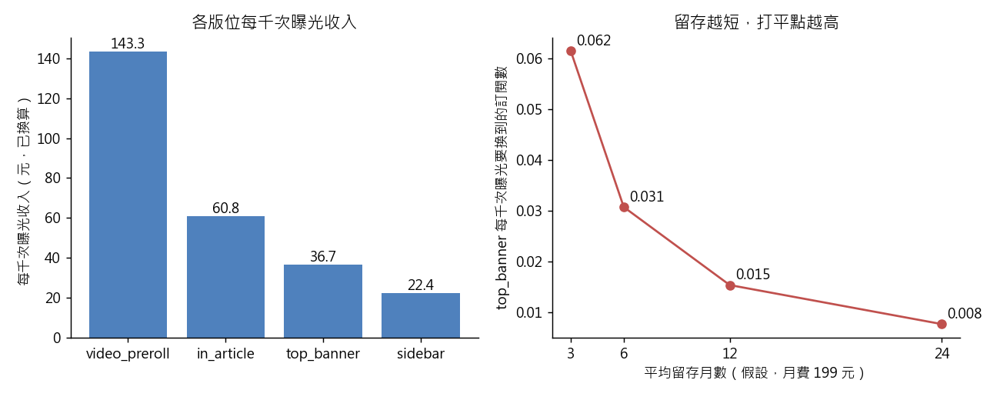

練習 06 - banner 賣廣告還是推訂閱
在本單元中，會介紹第 6 題「首頁 banner 是繼續賣廣告，還是改成推訂閱？給商業發展處一個打平點」背後的商業問題、它練的是哪一種資料分析，以及從資料到結論的完整做法、程式與圖表。
建議先回 Hub - 資料分析練習案例庫 自己試著做一次，再來對照這一頁。
題目
有人會這樣問你：商業發展處問：「首頁那塊 banner 一個月到底能賣多少錢？如果改成訂閱入口，要轉出幾個訂閱才划得來？」
| 難度 | 進階 |
| 組別 | 第 2 組：把經營問題拆成算得出來的東西 |
| 用哪張表 | ad_daily（L1：ad_daily_2024_10.csv）、content_monthly_flat（L1：content_monthly_2024_10.csv） |
| 對應單元 | LTV 與 CAC 一個讀者值多少 |
這一題在商業上要回答什麼
同一塊版面只能做一件事，要賣廣告還是導訂閱，是機會成本的比較。打平點把兩種收入換到同一個單位上，討論就從「感覺訂閱比較好」變成「每千次曝光要換到幾個訂閱」。
這一題練的是哪一種資料分析
這一題練的是單位經濟學與情境分析。資料裡沒有的數字，例如月費與留存月數，要明確寫成假設放在程式最上面，再把假設掃過一個範圍，看結論在哪裡翻盤，這就是敏感度分析。
怎麼做
兩張表各自算單價，不要硬接起來——它們的粒度不同（一邊是活動×版位×日，一邊是內容×月），10 月廣告曝光 4,170 萬次、網站工作階段只有 78 萬段，硬 join 會錯得離譜。廣告端：先照 currency 欄換算成台幣，再算每個版位的每千次曝光收入（eCPM）與點擊率。訂閱端：用 conversion_cnt ÷ paywall_hit_cnt 得到撞牆轉換率，再自己設「訂閱月費」與「平均留存月數」兩個假設算出 LTV——資料裡沒有這兩個數字，所以一定要寫在程式最上面當變數。最後回推打平點：這個版位每一千次曝光要換到幾個訂閱，才抵得過現在的廣告收入。用 Python，因為結論成不成立完全看留存假設，最後要用迴圈掃 3、6、12、24 個月四種留存看它在哪裡翻盤，手動改數字改四遍很容易漏。
程式
這一題用 Python，整支程式如下。資料放在 dist/L1 與 dist/L2 兩個資料夾；print 那幾行會把算出來的關鍵數字印出來，畫圖的部分在最後面。
from _kmg import *
MONTHLY_FEE = 199 # 假設：訂閱月費（資料裡沒有，照題目設定）
RETENTION = 12 # 假設：平均留存月數
a = ad()
a["twd"] = twd(a)
f = dedupe(flat())
print("廣告曝光總數（萬）", a["impression_cnt"].sum() / 1e4)
print("網站工作階段（萬）", f["sessions"].sum() / 1e4)
conv = float(a["twd"].sum())
print("換算後廣告收入", round(conv))
pl = a.groupby("placement").agg(t=("twd", "sum"), rv=("revenue", "sum"), i=("impression_cnt", "sum"))
pl["ecpm"] = pl["t"] / pl["i"] * 1000
for p, e in [("video_preroll", 143.3), ("in_article", 60.8), ("top_banner", 36.7), ("sidebar", 22.4)]:
print("每千次曝光收入 " + p, float(pl.loc[p, "ecpm"]))
ltv = MONTHLY_FEE * RETENTION
print("LTV", ltv)
be = float(pl.loc["top_banner", "ecpm"] / ltv)
print("top_banner 打平點（每千次曝光要換到的訂閱）", be)
print("換到一個訂閱需要的曝光", 1000 / be)
subs = int(f["conversion_cnt"].sum())
print("新訂閱首月訂閱費（萬元）", subs * MONTHLY_FEE / 1e4)
be3 = float(pl.loc["top_banner", "ecpm"] / (MONTHLY_FEE * 3))
print("留存 3 個月時打平點是幾倍", be3 / be)
months = [3, 6, 12, 24]
sweep = {m: float(pl.loc["top_banner", "ecpm"] / (MONTHLY_FEE * m)) for m in months}
print("top_banner 打平點（每千次曝光要換到的訂閱數）：" + "、".join("留存 %d 個月 %.4f" % kv for kv in sweep.items()))
under = 1 - pl["rv"] / pl["t"]
print("sidebar 被低估", float(under["sidebar"]))
print("video_preroll 被低估", float(under["video_preroll"]))
prog = a["platform"].isin(["openx_prog", "adx_prog"])
kept = a.dropna(subset=["viewability_rate"])
share_drop = kept.loc[kept["platform"].isin(["openx_prog", "adx_prog"]), "twd"].sum() / kept["twd"].sum()
print("程序化收入佔比（全部）", float(a.loc[prog, "twd"].sum() / conv))
print("程序化收入佔比（可視率 dropna 後）", float(share_drop))
order = ["video_preroll", "in_article", "top_banner", "sidebar"]
fig, ax = plt.subplots(1, 2, figsize=(10, 4))
ax[0].bar(order, pl.loc[order, "ecpm"], color="#4f81bd")
for i, v in enumerate(pl.loc[order, "ecpm"]):
ax[0].text(i, v, "%.1f" % v, ha="center", va="bottom")
ax[0].set_ylabel("每千次曝光收入（元，已換算）")
ax[0].set_title("各版位每千次曝光收入")
ax[1].plot(months, [sweep[m] for m in months], marker="o", color="#c0504d")
for m in months:
ax[1].annotate("%.3f" % sweep[m], (m, sweep[m]), xytext=(4, 4), textcoords="offset points")
ax[1].set_xticks(months)
ax[1].set_xlabel("平均留存月數（假設，月費 199 元）")
ax[1].set_ylabel("top_banner 每千次曝光要換到的訂閱數")
ax[1].set_title("留存越短，打平點越高")
save_fig(fig, "ex06_breakeven.png")
程式開頭的 from _kmg import * 載入共用的讀檔、去重、換幣別與畫圖函式，內容在 練習 01 - 月會上的則數對不對 的「共用的讀檔函式」那一段。
結果
10 月廣告收入換算後是 297.5 萬元台幣。各版位每千次曝光收入差很多：video_preroll 143.3 元、in_article 60.8 元、top_banner 36.7 元、sidebar 22.4 元。以月費 199 元、留存 12 個月（LTV 2,388 元）算，top_banner 的打平點是每千次曝光只要換到 0.015 個訂閱，也就是六萬五千次曝光換到一個訂閱就夠。同一個月網站帶進 14,463 個新訂閱，光首月訂閱費就有 288 萬元，和整個月的廣告收入幾乎一樣大。結論不是「廣告可以不用做了」，而是「廣告單價低到讓訂閱入口很容易打平，真正的風險在留存假設」：留存從 12 個月掉到 3 個月，打平點立刻變成四倍。
跑出來的關鍵數字
| 項目 | 結果 |
|---|---|
| 廣告曝光總數（萬） | 4170.4236 |
| 網站工作階段（萬） | 78.0431 |
| 換算後廣告收入 | 2975076 |
| 每千次曝光收入 video_preroll | 143.3282 |
| 每千次曝光收入 in_article | 60.769 |
| 每千次曝光收入 top_banner | 36.7203 |
| 每千次曝光收入 sidebar | 22.4059 |
| LTV | 2388 |
| top_banner 打平點（每千次曝光要換到的訂閱） | 0.0154 |
| 換到一個訂閱需要的曝光 | 65032.0654 |
| 新訂閱首月訂閱費（萬元） | 287.8137 |
| 留存 3 個月時打平點是幾倍 | 4 |
| sidebar 被低估 | 0.2901 |
| video_preroll 被低估 | 0.3688 |
| 程序化收入佔比（全部） | 0.3566 |
| 程序化收入佔比（可視率 dropna 後） | 0.2647 |
補充
- top_banner 打平點（每千次曝光要換到的訂閱數）：留存 3 個月 0.0615、留存 6 個月 0.0308、留存 12 個月 0.0154、留存 24 個月 0.0077
圖表

左圖是各版位換算後的每千次曝光收入。右圖是 top_banner 改成訂閱入口時，每千次曝光要換到幾個訂閱才打平；留存從 12 個月掉到 3 個月，打平點變成四倍。
接著做
上一題 練習 05 - 多三百個訂閱推哪一環、下一題 練習 07 - 訂閱功勞該算誰的，或回到 Hub - 資料分析練習案例庫 挑別的題目。
學生版｜更新於 2026-09-13 11:19